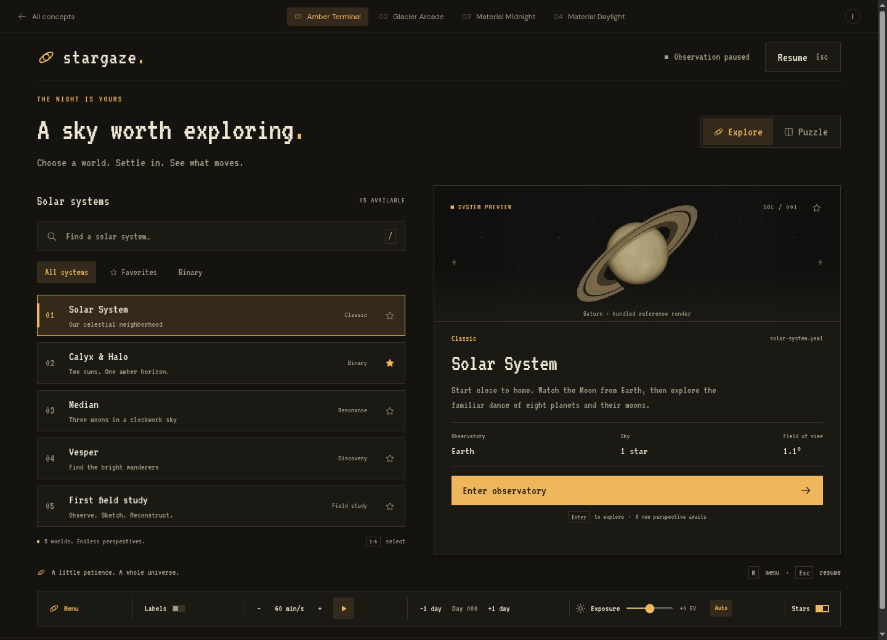
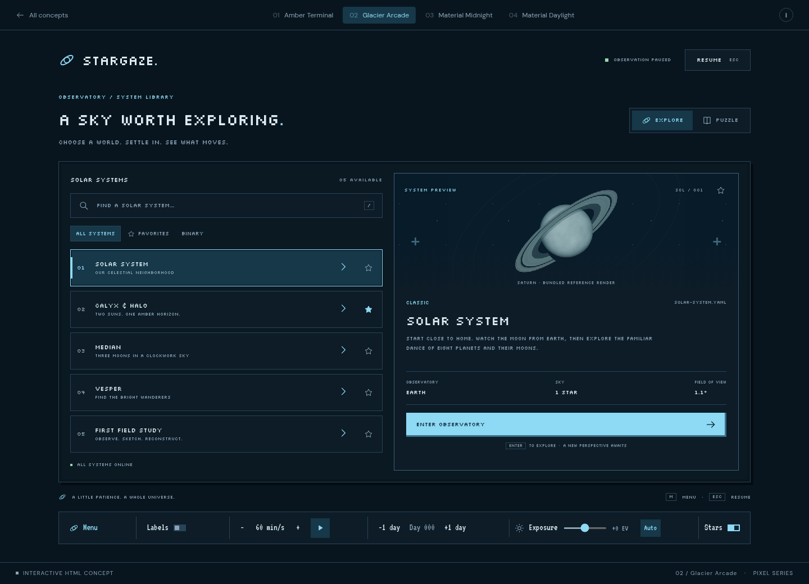
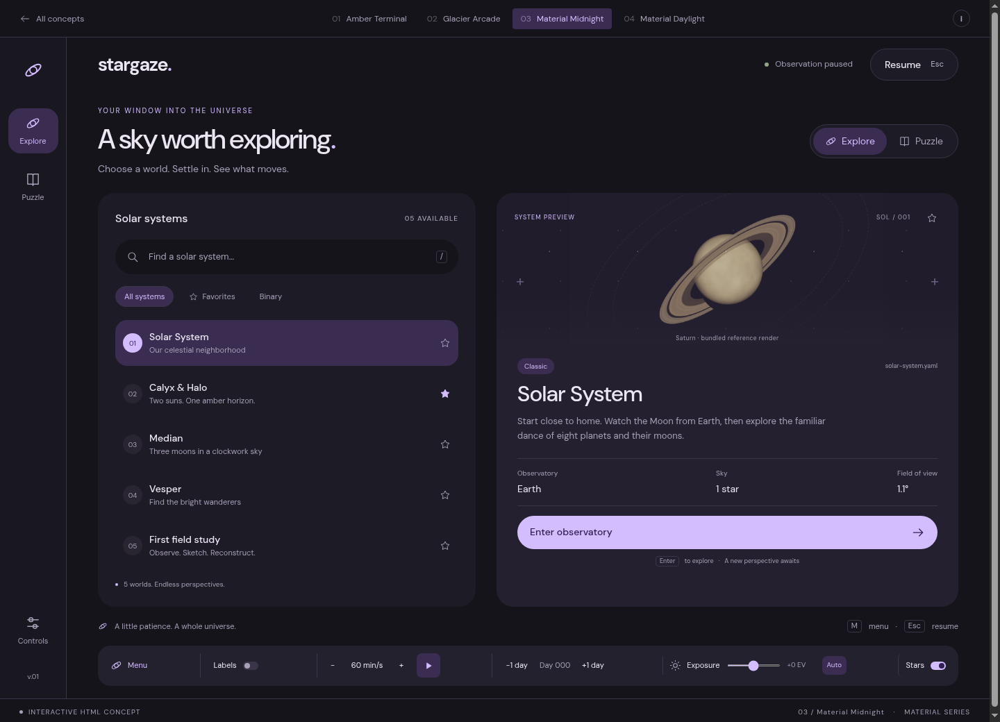
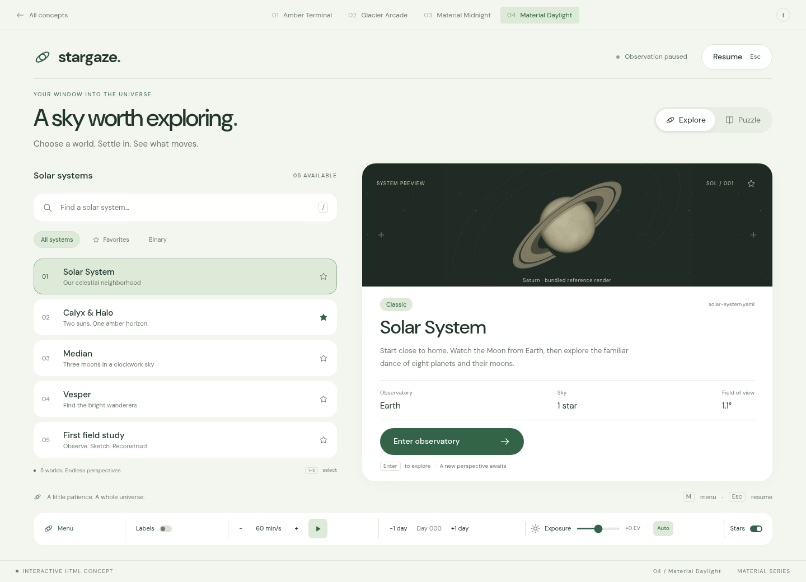

ONE OBSERVATORY. FOUR DIRECTIONS.
The same universe.
A different feeling.
Keep the pixel soul, or find a softer orbit.
Four interactive ideas for the next Stargaze menu.
01—02 Keep the pixels
The familiar character. A fresh frequency.

PIXEL / 01Open prototype ↗Amber Terminal
↗A quiet instrument panel after dark. Warm phosphor, sharp edges, and a font that feels like an old observatory terminal.

PIXEL / 02Open prototype ↗Glacier Arcade
↗A crisp little flight console. Geometric pixel type, inset borders, cool blues, and mint signals give the current menu more structure.
03—04 A softer orbit
Material surfaces. More room to breathe.

MATERIAL / 03Open prototype ↗Material Midnight
↗A calm space for the night shift. Lavender accents, rounded tonal cards, and a navigation rail make the observatory feel like a modern workspace.

MATERIAL / 04Open prototype ↗Material Daylight
↗A field notebook for the sky. Warm white, sage green, and generous spacing give the system library an approachable, daylight-friendly feel.
WHERE I WOULD START
Amber for character. Midnight for comfort.
Amber Terminal is the closest evolution of the current UI: add a clear selected state, a system preview, and warmer type. Material Midnight is my pick for a larger library and longer observing sessions.
There is more than a screenshot.
Open any concept. Choose a system, try Puzzle mode, save a favorite, and enter the observation view. The HUD lets you try playback, labels, day stepping, and exposure.
Standalone HTML concepts · illustrative observation controls · bundled fonts and project reference renders